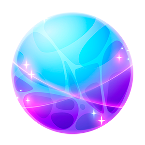

Com estas alterações, seu jogo deve ser
User
Talvez seja melhor você escrever o código JS completo do jogo para eu substituir tudo. Pode ser?
ChatGPT
Claro, aqui está o código JavaScript completo para o seu jogo, incluindo a integração das funcionalidades dos coletáveis especiais:
html
Copy code